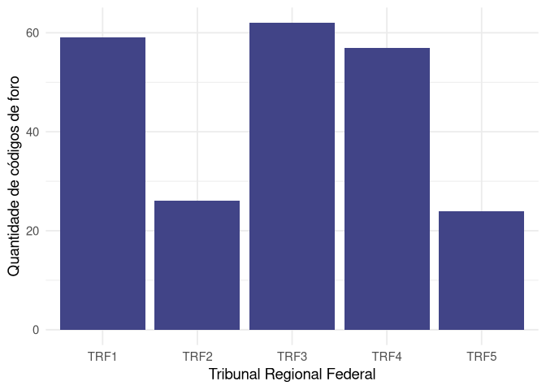

O objetivo do forosCNJ é disponibilizar bases de dados e documentação do projeto de levantamento das comarcas e códigos do Brasil, considerando o disposto na Resolução Nº 65/2008 do CNJ, que trata da uniformização do número dos processos nos órgãos do Poder Judiciário e dá outras providências, favorecendo a consulta processual.
O número CNJ possui a estrutura NNNNNNN-DD.AAAA.J.TR.OOOO, composto por seis campos obrigatórios.
Os dados foram coletados através dos anexos do Conselho Nacional de Justiça. Inclui-se Supremo Tribunal Federal, Conselho Nacional de Justiça, Superior Tribunal de Justiça, Justiça Federal, Justiça do Trabalho, Justiça Eleitoral, Justiça Militar da União, Justiça Estadual, Justiça Militar Estadual.
Instalação
A versão de desenvolvimento de forosCNJ pode ser instalada a partir do código:
devtools::install_github("abjur/forosCNJ")Exemplos
Segue abaixo alguns exemplos para o uso do pacote.
Exemplo das Bases disponíveis
library(forosCNJ)
dplyr::glimpse(da_foro)
#> Rows: 7,955
#> Columns: 5
#> $ id_justica <chr> "8", "8", "8", "8", "8", "8", "8", "8", "8", "8", "8", "8"…
#> $ id_tribunal <chr> "26", "26", "26", "26", "26", "26", "26", "26", "26", "26"…
#> $ id_foro <chr> "0000", "0001", "0002", "0003", "0004", "0005", "0006", "0…
#> $ comarca <chr> "São Paulo", "São Paulo", "São Paulo", "São Paulo", "São P…
#> $ descricao <chr> "Foro Unificado", "Foro Regional I - Santana", "Foro Regio…Exemplo de Tabela
da_foro_comarca %>%
dplyr::arrange(comarca) %>%
dplyr::filter(id_justica == 8) %>%
dplyr::sample_n(10) %>%
knitr::kable()| id_justica | id_tribunal | id_foro | comarca | descricao | sigla | uf | ibge |
|---|---|---|---|---|---|---|---|
| 8 | 13 | 0778 | ARINOS | Arinos | TJMG | MG | 3104502 |
| 8 | 26 | 0095 | BROTAS | Foro de Brotas | TJSP | SP | 3507902 |
| 8 | 21 | 0083 | BOM JESUS | Foro de Bom Jesus | TJRS | RS | 4302303 |
| 8 | 10 | 0089 | GUIMARAES | Fórum da Comarca | TJMA | MA | 2104909 |
| 8 | 25 | 0130 | MACAMBIRA | Fórum Des. Antônio Vieira Barreto | TJSE | SE | 2803708 |
| 8 | 17 | 1090 | PAULISTA | Paulista | TJPE | PE | 2610707 |
| 8 | 14 | 0002 | AFUA | Afua | TJPA | PA | 1500305 |
| 8 | 13 | 0671 | SERRO | Serro | TJMG | MG | 3167103 |
| 8 | 19 | 0030 | MANGARATIBA | Comarca de Mangaratiba | TJRJ | RJ | 3302601 |
| 8 | 09 | 0039 | CUMARI | FORUM DE CUMARI | TJGO | GO | 5206602 |
Exemplo de Gráfico
Gráfico de quantidade de Tribunais da Justiça federal por Siglas
library(ggplot2)
da_foro_comarca %>%
dplyr::filter(id_justica == 4) %>%
ggplot() +
geom_bar(aes(x = sigla), fill = viridis::viridis(1, 1, .2, .8)) +
theme_minimal(14) +
labs(
x = "Tribunal Regional Federal",
y = "Quantidade de códigos de foro"
)